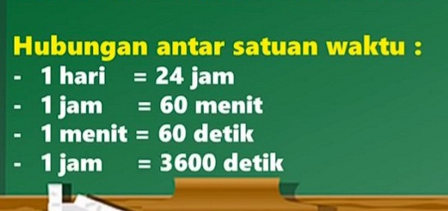
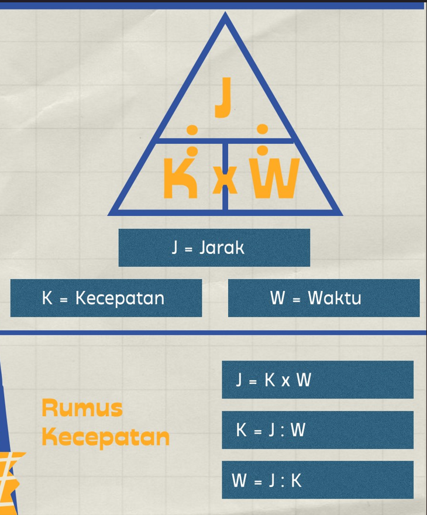

Kembali Halaman Sebelumnya
Kecepatan
Kecepatan adalah perpindahan yang dilakukan tiap satuan waktu. Artinya, kecepatan menunjukkan seberapa cepat suatu benda berpindah tempat pada selang waktu tertentu beserta arahnya. Satuan SI dari kecepatan adalah meter per detik (m/s).
Jarak adalah panjang lintasan yang dilalui. Satuan jarak biasanya dinyatakan dalam meter (m) atau kilometer (km). Dalam menghitung Jarak, kita perlu mengetahui satuan-satuan jarak sebagai berikut.

Dalam satuan jarak, jika turun satu tangga di kali 10 sedangkan jika naik satu tangga maka akan di bagi 10.
Waktu adalah lamanya melintasi jarak, dan kecepatan adalah satuan pergerakan benda. Satuan waktu adalah sekon/detik, menit, atau jam, dan satuan jarak umumnya menggunakan km/jam atau m/s. Sebelum kita menghitung kecepatan, terlebih dahulu kita harus memahami tentang operasi hitung satuan waktu dan hubungan antar satuan jarak.

Rumus Kecepatan:

Segitiga di atas berguna untuk memudahkan mengingat rumus kecepatan, jarak, atau waktu. Letak posisi sejajar menunjukkan bahwa rumus dikali. Sedangkan letak posisi atas-bawah menunjukkan bahwa rumus di bagi.